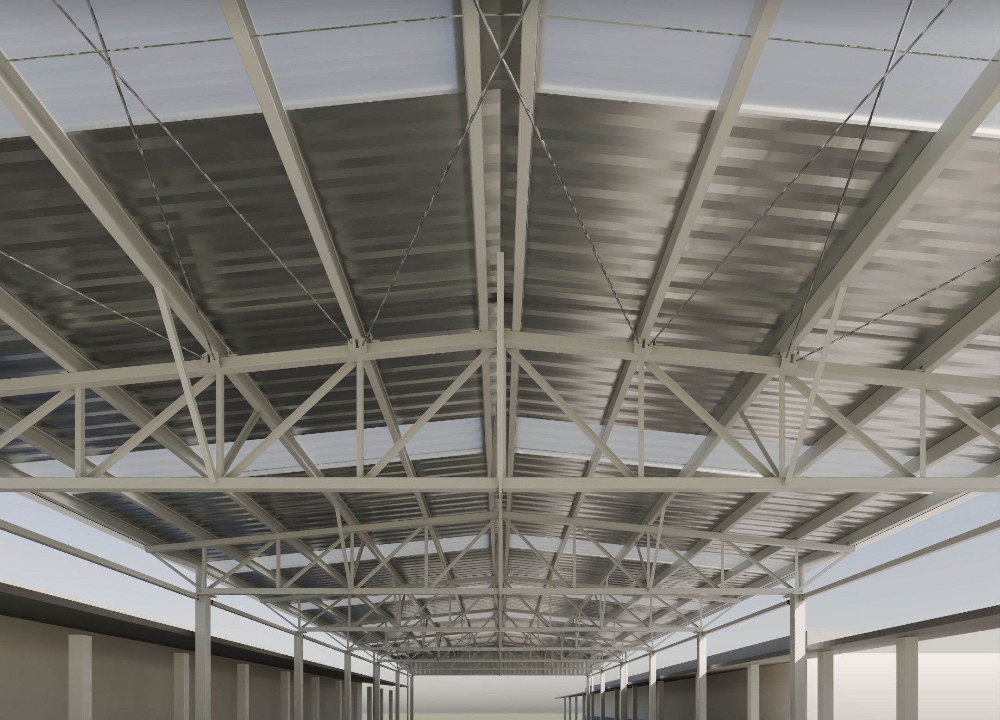
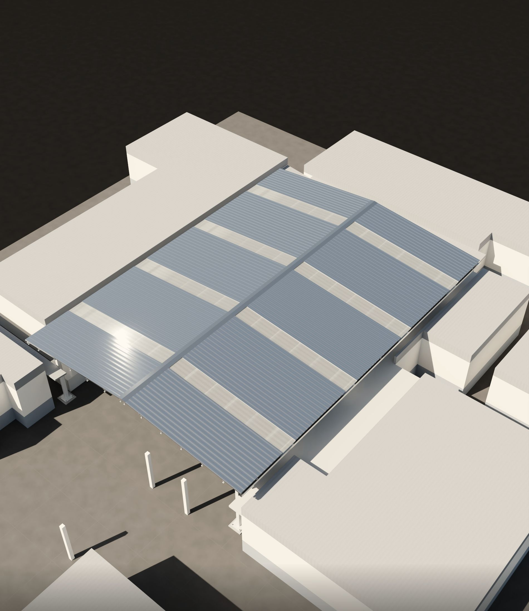
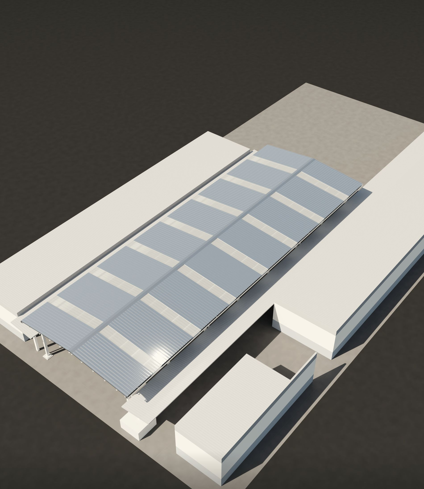
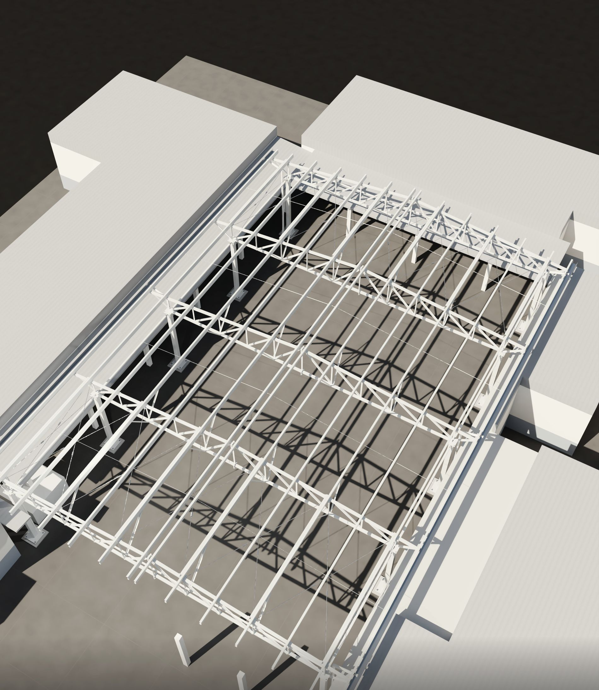
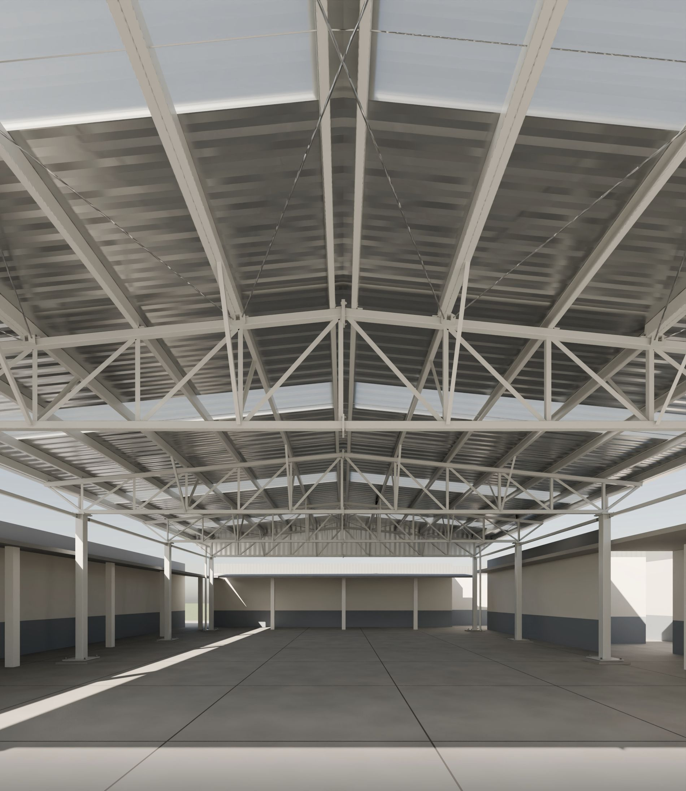
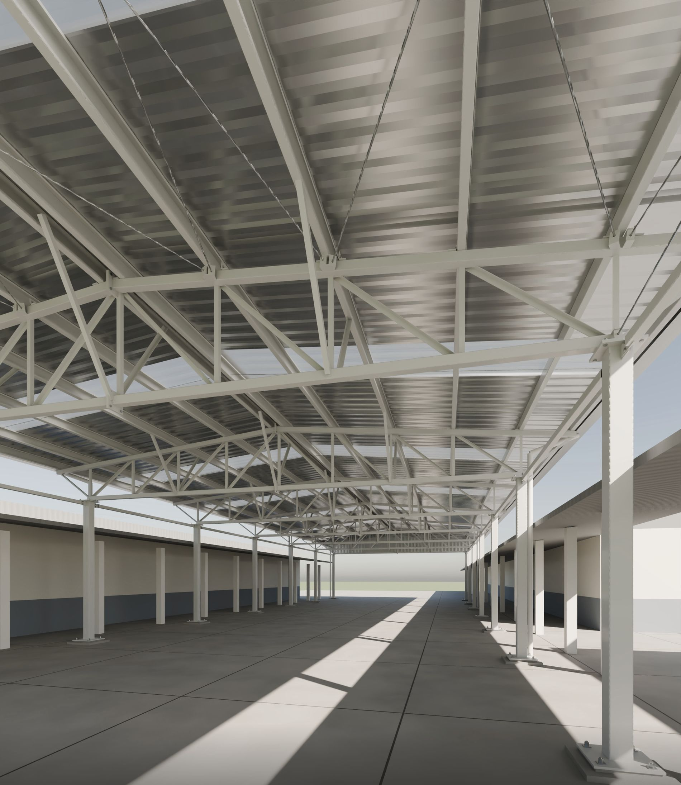

obras / estruturas
Cobertura de pátio escolar

Cobertura metálica para o pátio de duas escolas: 784 m² cobertos com 20,2 t de aço.
Coberturas de duas águas com faixas de telha translúcida, apoiadas em tesouras treliçadas e pilares metálicos entre os blocos existentes.
A estrutura foi calculada em modelo 3D com 1.175 barras e detalhada em 33 pranchas, das fundações às ligações.
- Local
- Papanduva · SC
- Área coberta
- 784 m²
- Sistema
- Estrutura metálica
- Aço
- 20,2 t
- Escopo
- Estrutura metálica e fundações
- Etapa
- Projeto · 2026
Coberturas




Estrutura





